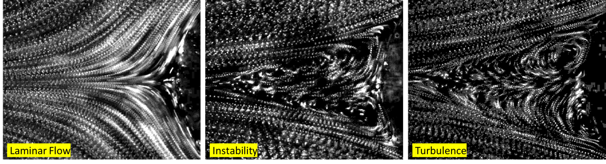

Previously, I worked as a
I was working as a
Previously I was working as a
After my PhD, I joined as Post-Doctoral researcher in University of Gothenberg, Sweden with Prof. Dag Hanstorp, Where I was working on Microfluidics to study the particle dynamics in low for developing biological model for blood flow and space physics Reynolds number. This project is colloborated with Theortical group Prof. Bernhard Mehlig
I have done my PhD research in Physics in the field Liquid Crystals with supervision of Dr. S. Krishna Prasad, at CeNS in Bangalore.
- Python (Scientific Computing, Machine Learning & Data Science)
- Matlab (Image Processing, Particle Tracking & Data acquisition)
- Labview (Interfacing, High Speed image acquisition & Data Collection)
- LATEX (Documentation, Scientific Article, Online Course)
- Internet of Things(IoT), ICT, API & Arduino related projects)
- Soft robotics, sensors, electro optic devices etc
- Software (C, C++, HTML, CSS & Web developmemt)
- Operating System (DOS, Windows & Linux )
- Python Codes Python Documentation for Researcher
- Python Codes Python Codings
Research
- Confinement on anisotropic softmatter (Liquid Crystals, Plastic Crystals, Gels and Polymers etc)
- Nano-Composites: Aerosil, Carbon Nano Tube(CNT), Silver, gold Nano-Colloids/nanoparticles)
- Microfluidics: (Devices, Sensors, Actuators and Core-Shell Particle Production etc)
- Fluid dynamics: (Particle Image Velocimetry, micro-PIV, Laminar, Transition, Instability, Drag enhancement/reduction, Turbulence, Newtonian/Non-Newtonian fluid)
- Particle dynamics: (Particle Tracking Velocimetry-PTV, Spinning and Tumbling in shear flow of Newtonian fluid)
- Optics and Photnoics (Non-Linear Optics, Optical Engineering, Laser Technology, Phtonics devices, Imaging and LCD Technology)
- Internet of Things(IoT) and Soft Robotics (Nvidia Jetson(GPU), Arduino(CPU,IDE) Rassperry Pi(CPU,GPU on Chip))
- State-of-the-art and Cutting-edge Technologies (Artificial Intelligence, Machine learning, Deep Learning)
Computation
Effect of Confinement / Phase Transitions
We performed calorimetric and X-ray measurements in the R1, R2, and R5 rotator phases of a long chain alkane (n-tetracosane) in bulk and confined to porous matrices (PTFE and Anopore) of two different length scales. Probing the order within and normal to the layers, in the Anopore case having a mesoscopic length scale (200 nm), drastic weakening of the R2-R1 and R1-R5 transitions is seen. The effect on the latter is to such an extent that it results in the first observation of a confinement-driven second order transition in these systems. A significant reduction of the temperature range of the R1 phase is also seen in the Anopore case, a feature argued to cause the change in the order of the transition. Comparisons are also made on the recent prediction of such a point in a Landau model. These findings, while paving a new means of realizing a tricritical point, will lead to better understanding of finite size effects in alkanes.
Influence of quenched disorder on phase transitions
Calorimetric measurements on composites of a long chain n-alkane, tetracosane, doped with nanosilica aerosil particles decorated with a corona of hydrophobic/hydrophilic nature are described. The weakly perturbing random field created by the addition of the aerosil particles has the general effect of weakening all the transitions to, and between, the three different rotator phases that the pure alkane exhibits. One of highlights of the studies is that the strong first order transitions of the pure alkane, viz., from the isotropic liquid to hexagonal rotator phase (Iso–R2), and tilted monoclinic rotator phase to the crystalline phase (R5–Cr), are accompanied by a much weaker supplementary peak at lower temperatures. In analogy with observations made in aerosil composites of liquid crystalline systems, and additionally with information from preliminary Xray diffraction measurements on the currently studied materials, it is reasoned that the subsidiary peaks are nothing but the transformations between the same phases as the corresponding main peaks due to the bulk of the material, but occurring in the vicinity of the surface of the aerosil particles. The nature of the corona of the aerosil particles also seems to play an important role. For the bulk transitions, the reduction in the transition enthalpy is higher for the composites with the hydrophilic particles, than those with hydrophobic particles; the opposite is true for the surface transitions. The data also suggest that the lowering of the transition temperature of the surface transition with respect to its bulk counterpart is more for the hydrophobic composites than the hydrophilic ones. We provide an explanation for these features based on the surface interactions between the particles and tetracosane molecules, and also the strength of the gel network.
Nano-Composites of Strongly/Weakly Polar Liquid Lrystals Doped with Carbon Nanotubes
We performed dielectric and conductivity measurements on a composite of carbon nanotubes and a liquid crystal possessing dual frequency switching characteristics. The conductivity increases by two orders of magnitude with respect to that for the host liquid crystal, and achieves negligible temperature dependence. The frequency dependence of the ac conductivity is explained by the extended pair approximation model, although the exponent is slightly higher than generally seen. We demonstrate that the current through the sample can be field-driven between the two anisotropic values (170:1) by simply changing the frequency of the applied voltage, and exhibiting at least a millisecond response. The chapter also presents a comparison in the dielectric and conductivity behaviour when the polarity of the host LC is substantially changed.
An Unusual Phase Sequence with Induction of a Phase in an n-Alkane – Liquid Crystal Binary System
we demonstrate two important features that arise out of introducing a liquid crystalline (LC) compound into the rotator phase matrix, and the consequent competition between the anisometric segments of the LC moieties, and the aliphatic units. First, we show that the change in the structural character of the mixed medium depends on which of the entities forms the minority concentration: in case of this being the alkane, the two components of the binary system get nanophase segregated, whereas if the LC molecules are in small concentration then the layered structure merely gets roughened without any segregation. The second and more significant result of the calorimetric and Xray experiments, at low LC concentrations, is the induction of a rotator phase that leads to unusual phase sequence, not reported hitherto. Possible scenarios for the molecular arrangement are discussed. A Landau model is also presented that explains some of the observed features.
Composites of Gold Nanoparticle/Liquid Crystal
We investigated calorimetric and dielectric investigations on a pure nematic liquid crystal (LC) and its composites comprising Gold nanoparticles (GNPs). Calorimetric measurements show that the inclusion of GNP has a strong influence on the isotropic ̶ nematic transition temperature as well its first order character in terms of the transition entropy. The absolute value of conductivity increases by two-three orders of magnitude with respect to that for the host liquid crystal and its concentration dependence is demonstrated to be described by the percolation scaling law generally observed in composites of metal particles and polymers. The frequency dependence of the ac conductivity exhibits a critical frequency that is concentration-dependent, but the exponents obtained defy Jonscher’s Universal Response principle. A surprising feature is the observation of a substantial increase in permittivity and their anisotropy values with faster director relaxation in the presence GNP. We provide an explanation for this antagonistic behaviour in terms of the alignment of the liquid crystal molecules in the vicinity of GNP, and the importance of the weak polarity of the liquid crystal used. The second part of the Chapter looks at the influence of embedding the LC-GNP composite in a restricted geometry created by aerosil particles. The inclusion of aerosil particles creating a gel network, albeit being non-conducting, surprisingly enhances the already high conductivity of the LC-GNP material. The nature of the aerosil corona (hydrophobic/hydrophilic) also controls the behavior. We argue that these features are caused by the amelioration of the percolation network of GNPs through the primary gel network of the hydrogen bonding aerosil particles. The concept can be generalized for a variety of systems wherein metal nanoparticles are imbibed in an insulating matrix.
Publications
Journals
Copyrights of the journal is with the publisher. You may download the PDF only for personal usage.
-
M. Vijay Kumar, R. Bhargavi, G. G. Nair and S. Krishna Prasad, Manuscript in preparation.
-
J. Fries, M. Vijay Kumar, B. Mekonnen Mihiretie, D. Hanstorp, B. Mehlig, Spinning and tumbling of micron-sized triangles in a micro-channel shear flow, Phys. Fluids, 2018, 30, 033304.
-
M. Vijay Kumar, S. Krishna Prasad, Y. Marinov, L. Todorova, A.G.Petrov, Flexo-Dielectro-Optical Spectroscopy as a Method of Studying Nanostructured Nematic Liquid Crystals. Mol. Cryst. Liq. Cryst.,2015, 610, 51–62.
-
Bhavesh K, M. Vijay Kumar, C.V. Yelamaggad and S. Krishna Prasad, Enhancement of electrical conductivity of a liquid crystal-gold nanoparticle composite by a gel network of aerosil particles, Appl. Phys. Lett.2015, 083110-5.
-
M. Vijay Kumar, S. Krishna Prasad, D.S. Shankar Rao and P.K. Mukherjee, Competition between anisometric and aliphatic entities: Induction of a new phase in a n-alkane –liquid crystal binary system, Langmuir, 2014, 30, 4465–4473.
-
S. Krishna Prasad, M. Vijay Kumar, T. Shilpa and C. V. Yelamaggad, Enhancement of electrical conductivity, dielectric anisotropy and director relaxation frequency in composites of gold nanoparticle and a weakly polar nematic liquid crystal, RSC Adv., 2014, 4, 4453-4462.
-
D.S. Shankar Rao, M. Vijay Kumar, S. Krishna Prasad, Uma S. Hiremath, M. Sarvamangalaand S. Basavaraja, Novel columnar–calamitic phase sequences in a binary system of bent-core and rod-like mesogens, J. Mater. Chem. C, 2013, 1, 7488–7497.
-
K. S. Krishnamurthy, Pramoda Kumar and M. Vijay Kumar, Polarity-sensitive transient patterned state in a twisted nematic liquid crystal driven by very low frequency fields, Phys.Rev. E.,2013, 87, 022504-11.
-
S. Krishna Prasad, M. Vijay Kumar, C.V. Yelamaggad, Dual frequency conductivity switching in a carbon nanotube/liquid crystal composite, Carbon, 2013, 59, 512-517.
-
M. Vijay Kumar, S. Krishna Prasad, Composites of single walled carbon nanotubes and liquid crystals as switchable conductors, NPCM, 2013, 4, 425–429.
-
M. Vijay Kumar, S. Krishna Prasad, D.S. Shankar Rao & E.P. Pozhidaev, Confinement driven effects in a room temperature ferroelectric liquid crystal: X-ray, linear and non-linear dielectric investigations, Phase Transitions, 2013, 86, 323–338.
-
M. Sarvamangala, M. Vijay Kumar, S.M. Khened, S.Basavaraja , D.S. Shankar Rao & S. Krishna Prasad, Anomalous dielectric behavior in the nematic and isotropic phases of a strongly polar–weakly polar binary system, Phase Transitions, 2013,86, 454–462.
-
M. Vijay Kumar and S. Krishna Prasad, Influence of quenched disorder created by nanosilica network on phase transitions in tetracosane, RSC Advances, 2012, 2, 8531–8538.
-
M. Vijay Kumar, S. Krishna Prasad, and D. S. Shankar Rao, Confinement-Driven Weakening of the Rotator Phase Transitions in an Alkane through a Possible Tricritical Point, Langmuir, 2010, 26, 18362–18368.
PhD Thesis (2016). PDF
National and International Conference/Seminar attended
-
"One-day Inter–Collegiate Seminar on “Electronic Communication” on 11.2.2003, Department of Physics, V. V. Vannniperumal College for Women, Virudhunagar-626001, Tamilnadu, India.
-
11th National Seminar on Crystal Growth (with International Participation), during December 7-9, 2006, SSN College of Engineering, SSN Nagar, Kalavakkam - 603110, Chennai, Tamilnadu, India.
-
2nd National Symposium on Non-Linear Optical Crystals and Modeling in Crystal Growth during March 26-27, 2007. Department of Physics, Anna University, Chennai-600025, Tamilnadu, India.
-
17th National Conference on Liquid Crystals during 15-17 November, 2010, Department of Chemistry, VeerNarmad South Gujarat University, Surat-395007, Gujarat, India.
-
18th National Conference on Liquid Crystals during 15-17 November, 2011, Department of Physics, North Eastern Regional Institute of Science & Technology, Itanagarat-791109, Arunachalpradesh, India.
-
IUPAC–Sponsored International Symposium on Macro-And Supramolecular Architechures and Materials: Nano System and Applications, Organized by Centre for Nano Science and Technology K.S. Rangasamy College of Technology,Thrichencode-637 215, Tamilnadu, India.
-
21th National Conference on Liquid Crystals during 10-12 November, 2014, Vikramajit Singh Sanatan Dharm (VSSD) College, Chhatrapati Shahu Ji Maharaj University, Kanpur, India.
-
25th International Liquid Crystal Conference ILCC2014 29 June -4 July 2014 Conference Centre, Arts Block, Trinity College Dublin, Dublin 2, Ireland.
Gallery
Confinement-Driven Weakening of the Rotator Phase Transitions in an Alkane
Influence of quenched disorder created by nanosilica network on phase transitions in tetracosane
Competition between Anisometric and Aliphatic Entities: An Unusual Phase Sequence with Induction of a Phase in an n-Alkane – Liquid Crystal Binary System
Comparative Studies of the Nano-Composites of Strongly/Weakly Polar Liquid Crystals Doped with Carbon Nanotubes
Collaborators
Associate Professor, Department of Mechanical Engineering, IISc Bengaluru, India.
Associate Professor, Department of Mechanical and Industrial Engineering, University of Illinois Chicago, USA

Emeritus Professor, Department of Physics of Complex Systems, Weizmann Institute of Science, Israel
Department of Physics, University of Gothenberg, Origovägen 6 B , 412 96 Göteborg
CeNS, Centre for Nano and Soft Matter Sciences, Bangalore, India
CeNS, Centre for Nano and Soft Matter Sciences, Bangalore, India
CeNS, Centre for Nano and Soft Matter Sciences, Bangalore, India
CeNS, Centre for Nano and Soft Matter Sciences, Bangalore, India

Department of Physics of Complex Systems, Weizmann Institute of Science

Department of Physics of Complex Systems, Weizmann Institute of Science
Contact
Email To: mvkumar198525@gmail.com
Lab No. 1024
Department of Mechanical and Industrial Engineering,
University of Illinois Chicago
Chicago, USA
60607
Contact: +1-3124784943